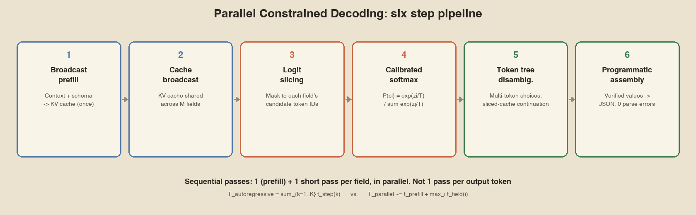

In one sentence: Parallel Constrained Decoding (PCD) answers a multi field schema with one prefill plus one short pass per field, instead of generating the output token by token. It only works when every field has a small fixed set of allowed answers.
1. At a glance
| Item | Detail |
|---|---|
| What it is | An inference method for schema bounded structured output |
| Works for | Boolean fields and enum fields (up to 255 choices) |
| Does not work for | Free text, nested objects, arrays, fields that depend on each other |
| Reference implementation | Harsha Gundala's Qwen2.5-1B-RLCD (Apple Silicon, MLX) |
| Benchmark model | mlx-community/Qwen2.5-1.5B-Instruct-4bit on an M4 Max |
| Training needed | None. It changes how a stock model is used, not its weights |
| Related reading | How Jev Actually Works (applied context) |
2. The problem it solves
Normal structured generation (JSON mode, function calling, grammar guided sampling) produces one token per forward pass:
[Context] -> "{" -> "\n" -> " " -> "risk" -> ":" -> " " -> "HIGH" -> ...
150 to 500 sequential forward passes for a typical schemaTotal latency is the sum of every token step:
\[ T_{\text{autoregressive}} = \sum_{k=1}^{K} t_{\text{step}}(k) \]Here \(K\) is the number of output tokens. It grows with every added field, so latency grows with schema size.
Two more problems come with this approach:
- Syntax errors: one bad token can break the whole JSON.
- Missing or invented keys: the model can skip a required field or make up a new one.
3. The core idea
Each field value comes from a small known set. So do not generate it. Score every allowed answer from the model's own logits and pick the best one.
- Read the context once.
- Reuse that cached work for every field.
- Look only at the tokens that are valid answers for the field.
- Build the JSON in code from the chosen values.

Fig. 1: The six stage pipeline. Stages 1 and 2 run once per request. Stages 3 to 5 run once per field, independently.
4. The algorithm
- Broadcast prefill. Put the context and the schema field descriptions through the model once. Store the KV cache.
- Cache broadcast. Share that one KV cache with all \(M\) fields. No field reprocesses the context.
- Logit slicing. For each field, run a short pass over its own suffix tokens. Read only the logits at that field's candidate token IDs. Ignore the rest of the vocabulary.
- Calibrated softmax. Turn the sliced logits into probabilities: \[ P(c_i) = \frac{\exp(z_i / T)}{\sum_{j=1}^{C} \exp(z_j / T)} \] \(z_i\) is the logit of candidate \(i\), \(C\) is the number of candidates, \(T\) is temperature.
- Token tree disambiguation. If candidates span several tokens and share a prefix, run extra steps on sliced cache states to tell them apart. No cache reallocation.
- Programmatic assembly. Build the output JSON in code from the chosen values. No parsing of generated text.
Why each stage exists
| Stage | What breaks without it |
|---|---|
| 1. Broadcast prefill | Every field would reprocess the full context. Cost grows with field count. |
| 2. Cache broadcast | Attention would be recomputed for the context on every field. |
| 3. Logit slicing | The top token could be outside the schema. Nothing enforces valid answers. |
| 4. Calibrated softmax | Raw logits are not probabilities. Code cannot threshold them. |
| 5. Token tree step | Candidates with the same first token could not be told apart. |
| 6. Programmatic assembly | Generated JSON text can be malformed. Validity is lost. |
Reference pseudocode
def parallel_constrained_decode(context, schema, model, T=1.0):
# Stages 1-2: one prefill, one shared KV cache
kv_cache = model.prefill(context + schema.render_descriptions())
results = {}
for field in schema.fields: # independent, parallelizable
# Stage 3: short pass reusing the cache, then slice logits
logits = model.forward(field.suffix_tokens, cache=kv_cache)
sliced = logits[field.candidate_token_ids()]
# Stage 4: softmax over the slice only
probs = softmax(sliced / T)
# Stage 5: multi token candidates
if field.has_multi_token_candidates():
probs = resolve_token_tree(field, kv_cache, probs)
results[field.name] = {
"value": field.candidates[argmax(probs)],
"prob": max(probs),
}
# Stage 6: build JSON in code
return assemble_json(results)Notes on the softmax
- Normalized over the slice only. Probabilities sum to 1 across the field's candidates, not the full vocabulary. Do not compare them with full vocabulary probabilities.
- Temperature changes confidence, not the answer. Softmax keeps the ranking, so the argmax is the same for any \(T > 0\). Only the reported probability changes.
- Masking detail. Implementations often set non candidate logits to \(-\infty\) instead of gathering. The result is identical because \(\exp(-\infty) = 0\).
- Ties are not covered by the public spec. Add your own tie break rule.
5. Complexity
| Property | Autoregressive | PCD |
|---|---|---|
| Sequential passes | \(K\) (150 to 500 typical) | 1 (the prefill) |
| Latency | \(\sum_{k=1}^{K} t_{\text{step}}(k)\) | \(t_{\text{prefill}} + \max_i t_{\text{field}}(i)\) with full parallelism |
| Growth with field count | Roughly linear | Sub linear. Each field adds one small pass |
| Generated tokens | Length of the JSON | 0 |
| Syntax validity | Not guaranteed | Guaranteed by construction |
In the reference benchmark, going from 4 fields to 28 fields raised the autoregressive output from about 148 tokens to about 312. The PCD speedup improved from 5.6x to 7.0x, because the fixed prefill is a smaller share of the alternative.
Worked example
Published numbers for the 28 field triage scenario:
- Autoregressive: 1,894.2 ms for 312 tokens, about 6.07 ms per token.
- PCD: 268.4 ms total, one sequential pass.
A separate 3 field example response reports elapsed_ms: 74.5, prefill_ms: 52.1, suffix_eval_ms: 18.2. That is about 70% prefill and 24% field evaluation.
Applying that ratio to the 28 field run is an estimate, not a measurement: roughly 188 ms prefill and 65 ms for all fields, so about 2 to 3 ms per field. The published data has no per field timing for that scenario.
6. Schema specification
from core.schema import StructuredSchema, FieldDefinition
schema = StructuredSchema({
"priority": {
"type": "enum",
"choices": ["P0_CRITICAL", "P1_HIGH", "P2_NORMAL", "P3_LOW"],
"description": "Urgency tier based on customer business impact"
},
"requires_escalation": {
"type": "boolean",
"description": "Whether an on-call engineer must be notified"
},
"department": {
"type": "enum",
"choices": ["BILLING", "INFRASTRUCTURE", "SECURITY", "PRODUCT_SUPPORT"],
"description": "Target handling department"
}
})| Constraint | Value |
|---|---|
| Field types | boolean, enum |
| Max choices per enum | 255 |
| Nesting | Not supported. Flat schemas only |
| Cross field dependency | Not supported. Fields are scored independently |
| Free text fields | Not supported |
7. Running it and reading the output
from core.engine import run_parallel_generation
result = run_parallel_generation(context, schema)
print(result["elapsed_ms"], result["sequential_forward_passes"])
print(result["parsed_json"])Response shape:
{
"mode": "parallel_constrained_calibrated",
"elapsed_ms": 74.5,
"prefill_ms": 52.1,
"suffix_eval_ms": 18.2,
"sequential_forward_passes": 1,
"is_valid_json": true,
"schema_match": true,
"parsed_json": {
"priority": { "value": "P0_CRITICAL", "prob": 0.9924 },
"requires_escalation": { "value": "true", "prob": 0.9981 },
"department": { "value": "INFRASTRUCTURE", "prob": 0.9815 }
},
"field_telemetry": {
"priority": {
"confidence": 0.9924,
"cardinality": 4,
"top_choices": [
{ "choice": "P0_CRITICAL", "probability": 0.9924 },
{ "choice": "P1_HIGH", "probability": 0.0068 }
]
}
}
}sequential_forward_passes: 1means the whole request had one sequential dependency.field_telemetryexposes the full distribution, so your code can apply its own confidence threshold.
8. Benchmark data
Apple Silicon M4 Max, mlx-community/Qwen2.5-1.5B-Instruct-4bit, macOS Sequoia.
| Scenario | Fields | Autoregressive | PCD | Speedup |
|---|---|---|---|---|
| Fintech fraud routing | 4 | 420 ms | 75 ms | 5.6x |
| Code security audit | 4 | 380 ms | 68 ms | 5.6x |
| Tariff classification | 1 field, 255 choices | 500 ms | 89 ms | 5.6x |
| Enterprise support triage | 28 | 1,900 ms | 270 ms | 7.0x |
Raw CLI output from the same runner:
Fintech Fraud Detection (4 fields)
Autoregressive : 421.3 ms | 148 tokens | Passes: 148
Parallel : 74.8 ms | 0 tokens | Passes: 1
SPEEDUP: 5.6x (step reduction 148x)
Support Triage Matrix (28 fields)
Autoregressive : 1894.2 ms | 312 tokens | Passes: 312
Parallel : 268.4 ms | 0 tokens | Passes: 1
SPEEDUP: 7.1x (step reduction 312x)9. Compared with other structured output methods
| Method | How it decodes | Valid syntax | Sequential passes |
|---|---|---|---|
| Plain JSON prompting | Autoregressive, unconstrained | No | \(K\) |
| Grammar constrained decoding | Autoregressive, each token masked to grammar valid tokens | Yes for syntax | \(K\) |
| PCD | Prefill once, score candidates per field | Yes, by construction | 1, plus \(M\) independent field passes |
Grammar constrained decoding still generates token by token. It limits what each token may be, but it still needs one forward pass per token. PCD removes the generation loop for field values.
The two can be combined in principle: PCD for bounded fields, another method for free text. The public PCD code does not support free text fields.
10. When to use it
| Your output | Use PCD? |
|---|---|
| All fields are booleans or fixed enums | Yes. This is the target case. |
| Some fields need free text | Not for those fields. Route them elsewhere. |
| One field's choices depend on another field | Not in one call. Use two calls or filter the distribution in code. |
| Nested objects or arrays | No. Schemas must be flat. |
| More than 255 choices in one field | Not directly. Bucket or split the decision. |
11. Limits
- No free text and no nesting in the reference implementation.
- No cross field conditioning inside one call. Enforce consistency in your own code.
- 255 choice ceiling per enum. Multi token choices need the extra token tree step, which costs more than single token choices.
- Apple Silicon only in the published engine. The idea works on any stack that exposes logits and KV cache reuse, but the benchmark numbers are specific to MLX on an M4 Max.
- Valid is not correct. PCD guarantees a valid output. It does not guarantee the chosen answer is right. The public benchmarks report latency and validity, not task accuracy.
ParallelScorer on Apple Silicon processes the context once and scores all fields. Its CUDA scorer scores each field with the full prompt, so it skips the cache sharing. Nimble also says fields cannot see each other's answers.FAQ
Is this speculative decoding?
No. Speculative decoding speeds up open ended generation with a draft model. PCD does not generate field values. It scores a fixed set of candidates.
Can it return a value outside the schema?
No. Logits are sliced to the field's candidate token IDs, so the argmax can only be one of them. This guarantees schema validity. It says nothing about whether the value is correct.
Does more fields always improve the speedup?
In the four benchmarks, yes: 5.6x at 4 fields, 7.0x at 28. It is not unbounded. Each field still costs a small pass, and the benchmarks stop at 28 fields.
Where can I try it without installing?
The model card links a hosted demo: drinkmoonshine/parallel-constrained-decoding on Hugging Face Spaces.
Takeaways
- PCD swaps generation for scoring on bounded fields.
- \(K\) sequential passes become 1 prefill plus \(M\) small independent passes.
- Valid syntax is guaranteed. Correctness is not.
- It is not grammar constrained decoding, which still loops per token.
- Limits: flat schema, no free text, no cross field dependency, 255 choices, Apple Silicon benchmarks.
References
- harshatheg/Qwen-2.5-1B-RLCD on Hugging Face Primary source for the algorithm, formulas, API and benchmarks.
- Live side by side demo Runs in the browser.
- Harsha Gundala, release announcement Original context.
- bespokelabsai/nimble Independent implementation of the same pattern.
- How Jev Actually Works Applied context and the MiniCheck lineage.
- System One Models and Jev Original technical read on the Jev launch.